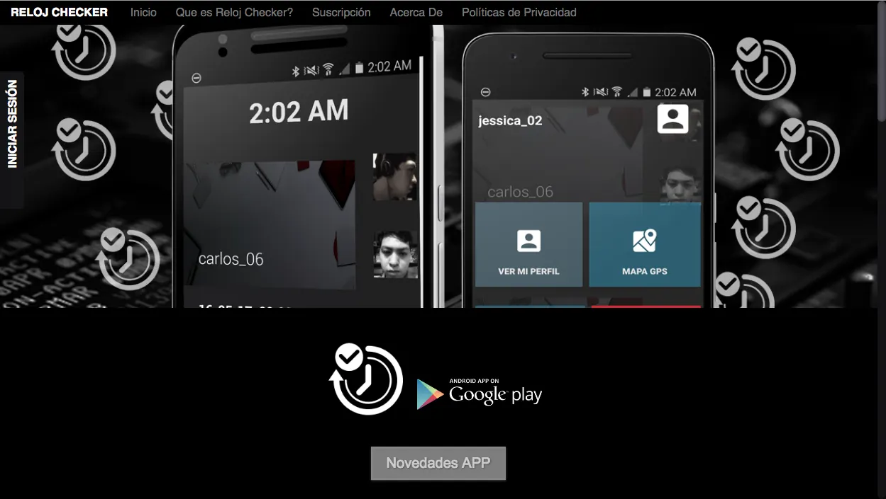
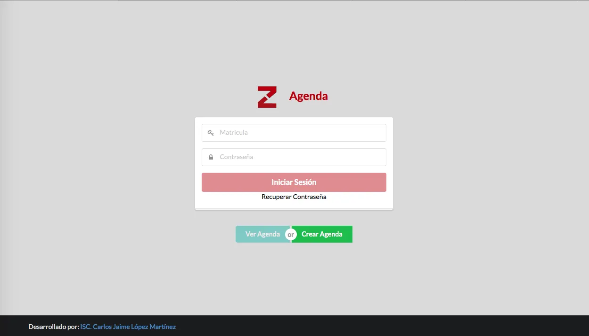
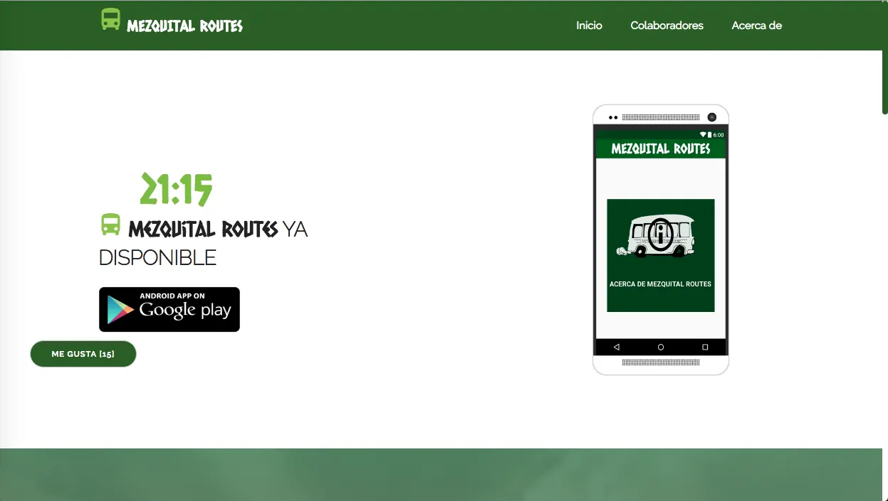
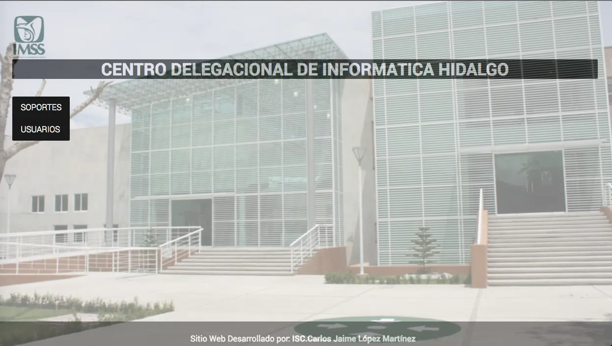
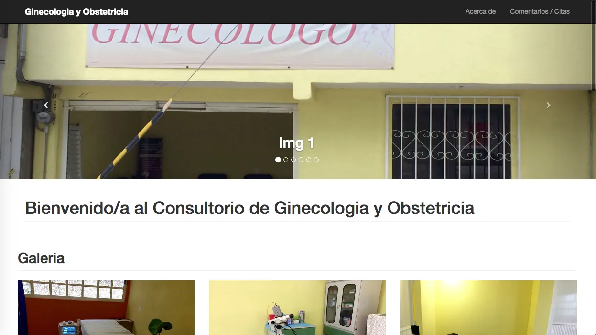
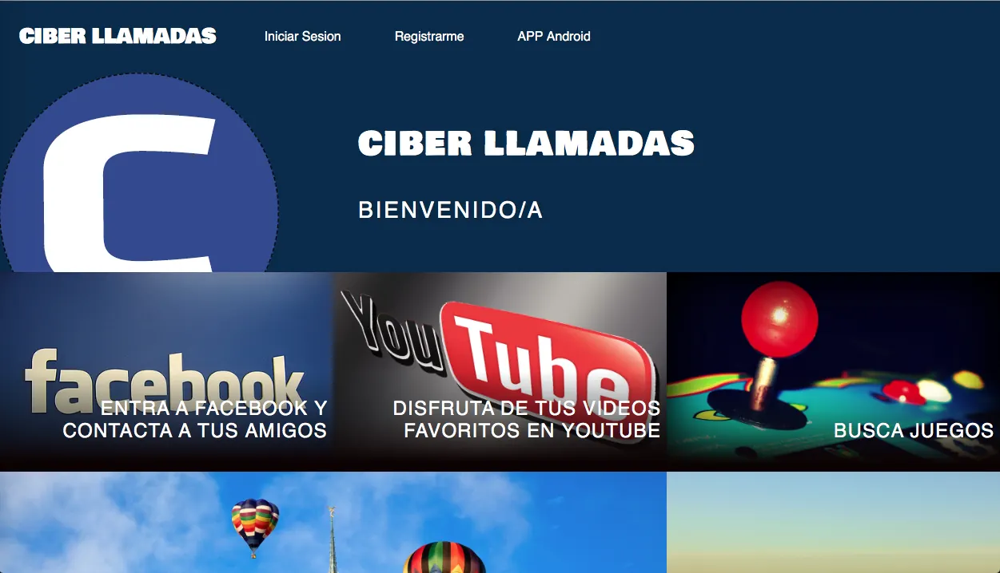

Frontend
09- TypeScript
- JavaScript
- React
- Next.js
- Astro
- Tailwind CSS
- HTML5
- CSS3
- Design Systems
Disponible para nuevos proyectos y consultoría
Senior Software Developer
Más de 10 años construyendo software que llega a producción: plataformas SaaS multisucursal, sistemas empresariales de misión crítica, aplicaciones móviles nativas e interfaces que la gente disfruta usar. Arquitectura, código y diseño en la misma persona.
Desplaza para explorar10+ años en producción
SaaS · Web · Mobile · IoT
Sobre mí
Trabajo en el punto donde la arquitectura de software se encuentra con la experiencia de usuario: sistemas que escalan y que además se sienten bien al usarlos.
0+
Años construyendo software en producción
0+
Productos y plataformas diseñados y entregados
0
Empresas y startups fundadas o cofundadas
0
Frentes técnicos: web, mobile, backend e IoT
Soy Ingeniero en Sistemas Computacionales egresado del ITSOEH con especialidad en Robótica. Hoy me desempeño como Senior Software Developer en Farmacias Guadalajara, donde construyo y mantengo aplicaciones empresariales, sistemas críticos y plataformas internas de alto volumen.
En paralelo dirijo CODEXFIGHT y DevHive Software, y cofundé EcoNutrix, CodeCrafters Developer Community y TribeHub Social. Desde ahí diseño y desarrollo productos propios como RestaurOS, Dividis Social y AquaID.
Mi perfil combina full stack, especialización frontend, móvil, backend, bases de datos, arquitectura, integración de APIs, UI/UX, IoT, automatización e investigación aplicada en inteligencia artificial. Construyo con foco en código limpio, escalabilidad, seguridad, rendimiento y mantenibilidad.
Stack técnico
Elijo tecnología por el problema, no por la moda. Esto es lo que uso a diario en producción.
Trayectoria
De sistemas institucionales y apps Android nativas a plataformas SaaS multisucursal y dirección técnica de producto.
Actualidad
Farmacias Guadalajara
Aplicaciones empresariales y sistemas de misión crítica de alto volumen, con foco en estabilidad, rendimiento, seguridad y escalabilidad.
Actualidad
CODEXFIGHT · DevHive Software
Dirección técnica y de producto de dos estudios de software: plataformas web, apps móviles, e-commerce, SaaS y automatización para empresas y marcas.
Actualidad
EcoNutrix
Plataforma health-tech de nutrición y bienestar. Landing oficial y aplicación móvil para Android e iOS.
Actualidad
CodeCrafters Developer Community
Comunidad internacional de desarrollo enfocada en productos web modernos, escalables y centrados en la experiencia de usuario.
Actualidad
RCMx Game Development · PIXELOVE.INC · NexLink Networks
Iniciativas propias en videojuegos e interfaces inmersivas, hardware conectado y automatización, e infraestructura de redes.
2016 — 2017
IMSS Hidalgo · SNTSS · Sector público y privado
Sistemas web y aplicaciones Android nativas para instituciones de salud, sindicatos, transporte público y negocios locales.
Formación
Instituto Tecnológico Superior del Occidente del Estado de Hidalgo (ITSOEH)
Base formal en sistemas, electrónica y robótica que sostiene el trabajo actual en IoT, integración hardware-software y sistemas embebidos.
Proyectos
Una selección del trabajo propio y para clientes. Filtra por disciplina y abre cualquier tarjeta para ver el detalle técnico.
SaaS · Restaurant OS
Sistema operativo para restaurantes: POS, mesas, KDS, inventario, caja, clientes y operación multisucursal en un solo ecosistema.
FinTech · Social
Registro y división de gastos compartidos entre amigos, parejas, viajes y equipos con balances claros y experiencia colaborativa.
GovTech · Gestión de servicios
Digitaliza la administración de servicios de agua: clientes, pagos, periodos, adeudos e historial en una plataforma centralizada.
SaaS · Food service
Plataforma administrativa para taquerías: caja, cocina, inventario, pedidos, ventas y sucursales en una sola interfaz.
Marketplace · Automotriz
Conecta clientes, mecánicos y refaccionarias con citas, tienda de refacciones, notificaciones push y seguimiento operativo.
HealthTech · Landing + App
Landing oficial y app Android/iOS de una plataforma de nutrición, bienestar y tecnología.
Red social · Comunidades
Plataforma social para conectar personas con intereses afines y fomentar comunidades digitales auténticas.
Gaming · Experiencias interactivas
Startup de videojuegos, prototipos jugables, interfaces inmersivas y software creativo multiplataforma.
IoT · Seguridad
Sistema de acceso biométrico con base de datos relacional, panel standalone y apps nativas Android/iOS.
I+D · Inteligencia artificial
Aplicaciones móviles impulsadas por modelos de lenguaje: asistentes conversacionales, agentes y automatización de flujos.

Web + Android · 2017
Control de entradas y salidas de empleados para empresas y organizaciones, con portal web y app Android.

Web + Android · 2017
Agenda digital para el Secretario del SNTSS para atender al personal de las clínicas del estado de Hidalgo.

Movilidad · 2016
Costos, horarios, oficinas y lugares turísticos del transporte público del Valle del Mezquital.

Sector salud · 2016
Sistema de incidencias a nivel delegacional para reportar fallos del área de informática del IMSS.

Sector salud · 2016
Bitácora de citas para calendarizar pacientes a lo largo de la jornada con reserva anticipada.

Web + Android · 2016
Portal de información y entretenimiento para usuarios de ciber café, con estadísticas para administradores.
No hay proyectos en esta categoría todavía.
Ventures
Estudios de software, startups de producto y comunidades técnicas que dirijo o cofundé.
CEO & Founder
Software & product studio: desarrollo a medida, plataformas web, apps móviles, e-commerce y automatización.
CEO
Soluciones digitales y productos SaaS para negocios que digitalizan, automatizan y escalan su operación.
Founder
Videojuegos, experiencias interactivas, interfaces inmersivas y software creativo multiplataforma.
CEO & Founder
Software, hardware, automatización y sistemas conectados dentro de una misma plataforma tecnológica.
Founder
Proveedor de servicios de Internet e infraestructura de redes alámbricas e inalámbricas.
Cofundador
Plataforma health-tech de nutrición y bienestar con landing oficial y app Android/iOS.
Cofundador
Comunidad internacional de desarrollo enfocada en productos web modernos y colaboración técnica.
Cofundador
Plataforma social para conectar personas con intereses afines y construir comunidades digitales.
Servicios
Desde CODEXFIGHT y DevHive Software entrego producto end-to-end: descubrimiento, diseño, desarrollo, lanzamiento y soporte.